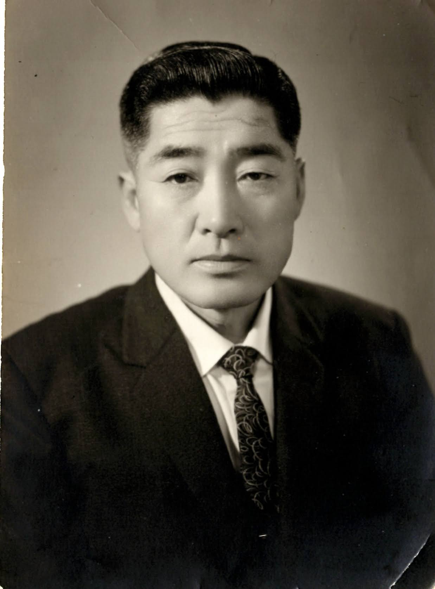

The number 38 is significant to all Koreans.
But for those born north of the 38 degrees latitude, it means far more.
It means longing for a home, that is beyond reach, in this lifetime.
My father’s home is 함경도 안변군 신모면 이남리 47 about 10 miles south of present day Wonsan (원산시, 元山市) Port. Located about 150 miles northwest from Seoul.
My father’s family was living in this remote part of Korea, when his maternal uncle, 김동훈 traveled by foot to find the family.

The uncle convinced the family life would be better in the South.
My father’s family was settled in South Korea. He had a chance to work for a Japanese company
Few years later, when Japanese left, he became the owner of the home that belonged to a manager.
He was all of 15 years of age.
Later he was drafted in the South Korean army and was on a weekend leave when the fighting broke out on Sunday, June 25th, 1950.
(Father fought in major battles of Korean War and he wondered how he survived those battles)
Father thinks, had he remained in North Korea and had fought for the North Korean Army, he may not have survived the war.
Father always had appreciation for the uncle that sought out the family and led them to a freer and a land with more opportunities
아~~ 산이 막혀 못 오시나요
아~~~~ 물이 막혀 못 오시나요
다 같은 고향 (家鄉, 故郷) 땅을 가고 오련만
남북이 가로 막혀 원한 천리(千里)길
꿈마다 너를 찾아 꿈마다
너를 찾아 삼팔선(三八線)을 탄한다
Ah, is the mountain in your way?
Or is the river too wide?
All are free to visit place of birth
The blocked boundary makes mine seem a 1000 里
Visit you in a dream and blame the 38th parallel